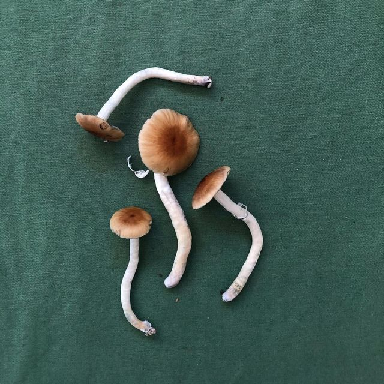

Asesoramiento sobre la medicina fungi y sesiones astrologicas
Le ofrecemos a partir de conocimientos médicos, medicina no tradicional, a través de hongos cultivados bajo estricto régimen natural sin estimulantes.
Por otra parte ofrecemos sesiones astrológicas las cuales pueden ser desde la carta astral, hasta el seguimiento de los astros en su árbol genealógico, para mayor información no dude en consultar.
Le ofrecemos a partir de conocimientos médicos, medicina no tradicional, a través de hongos cultivados bajo estricto régimen natural sin estimulantes.
Por otra parte ofrecemos sesiones astrológicas las cuales pueden ser desde la carta astral, hasta el seguimiento de los astros en su árbol genealógico, para mayor información no dude en consultar.
¿Que hacemos?
Hacemos cultivos naturales de hongos tantos comestibles, como medicinales, los mismos son cultivados bajo riguroso cuidado sin ningún tipo de estimulante de crecimiento o plaguicida.
A su vez realizamos un seguimiento medicinal al paciente mientras dure el tratamiento
¿Como lo hacemos y tipo de asesormaiento?
Se realiza tanto presencialmente o vía online, eso dependerá de la situación o de lo que necesite el paciente en sí.
Contamos con una amplia cartilla de profesionales médicos los cuales están en constante conocimiento sobre el paciente a seguir.
Los profesionales que trabajan con nosotros están en constante capacitación sobre las nuevas medicinas que ofrecemos, lo cual nos diferencia del resto
Tipo de productos que ofrecemos
